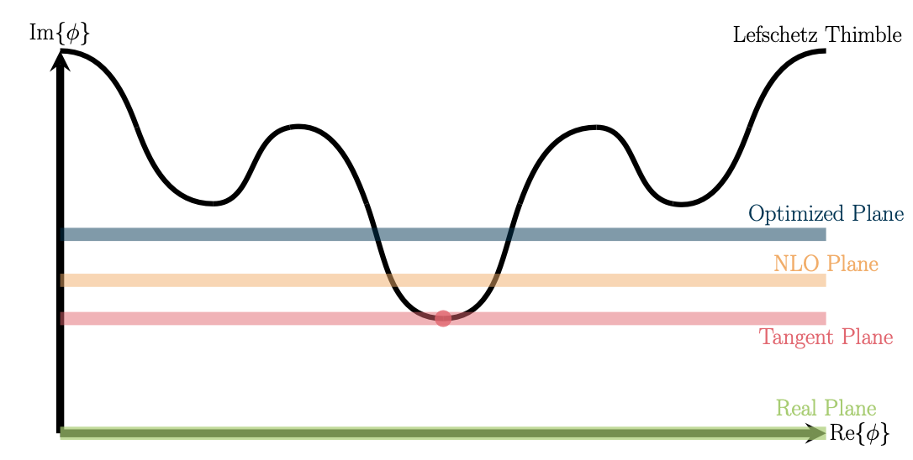
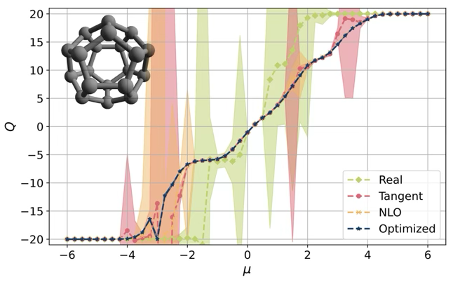

Quantum Monte Carlo Simulations of Carbon Nano-Systems
Carbon Nano-Systems


Examples
Determined location of quantum phase transition in 2D Hubbard

- Finite size scaling analysis
- tune \(U_c\), \(\beta\) and \(\nu\) to obtain data collapse (universal line)
- most precise value of critical coupling to date : \(U_c=3.835(14)\)
- J. Ostmeyer, T.L., et al., 2105.06936
Two-body dynamics
- Can assign spin/isospin quantum numbers to the holes and particles
| \(S_z=1/2\) | \(S_z=-1/2\) | |
|---|---|---|
| \(I_z=1/2\) | \(p^\dagger\) | \(h^{}\) |
| \(I_z=-1/2\) | \(h^\dagger\) | \(p^{}\) |
- Two-body interpolating operators

Two-body Observables
\(I_z=1,S_z=1\) correlation function: \(\langle p_{y'}^{}(\tau)p_{x'}^{}(\tau)p_x^\dagger(0)p_y^\dagger(0)\rangle = \langle M_{x'x;\tau}^{-1}M_{y'y;\tau}^{-1}-M_{x'y;\tau}^{-1}M_{y'x;\tau}^{-1}\rangle\)
\(I_z=0,S_z=1\) correlation function: \(\frac{1}{2}\langle\left(p_i^\dagger h_j^\dagger + h_i^\dagger p_j^\dagger \right)\left( h_k^{} p_l^{} + p_k^{} h_l^{} \right)\rangle =\langle M^{-1\ast}_{ki;\tau}M^{-1}_{lj;\tau}+M^{-1\ast}_{li;\tau}M^{-1}_{kj;\tau}\rangle\)

“charge” \(Q\equiv 2I_z\)
To bind or not to bind

- Energy shift \(\Delta E_0 = E_{2}-2E_1\)
- \(\Delta E_0 \ge 0 \implies\) repulsive (unbound)
- \(\Delta E_0 <0 \implies\) attractive (perhaps bound)
- P. Sinilkov, T.L., et al., 2502.04015
When life is not so good
- non-bipartite lattice
- cannot divide system into sublattices
- non-zero chemical potential \(\mu\ne0\)
- doping (finite density)
- \(\det M[-\phi;-\kappa,-\mu]!=\det M^\dagger[\phi;\kappa,\mu]\)
- \(\det M[-\phi;-\kappa,-\mu] M[\phi;\kappa,\mu]\in\mathbb{C}\)
\(\implies\) HAVE SIGN PROBLEM! :pensive:
Problem occurs because \(S\) becomes complex \[\begin{align} S[\phi] &= \frac{1}{2} \phi^\dagger V^{-1} \phi + \log \det M[-\phi;-\kappa,-\mu] M[\phi;\kappa,\mu] = S_{\mathcal{R}}[\phi]+iS_{\mathcal{I}}[\phi]\\ \langle O\rangle &= \frac{1}{\mathcal{Z}}\int D\phi\; O[\phi]\; e^{-S[\phi]}=\int D\phi\; O[\phi]\; P[\phi] \end{align}\] Poor man’s attempt to mitigate sign problem: reweighting \[\begin{align} \langle O\rangle = \frac{1}{\mathcal{Z}}\int D\phi&\ O[\phi]\; e^{-S_{\mathcal{R}}[\phi]-iS_{\mathcal{I}}[\phi]} =\frac{\int D\phi\; O[\phi]e^{-iS_{\mathcal{I}}[\phi]}\; e^{-S_{\mathcal{R}}[\phi]}}{\int D\phi\; e^{-S_{\mathcal{R}}[\phi]}}\frac{\int D\phi\; e^{-S_{\mathcal{R}}[\phi]}}{\int D\phi\; e^{-S_{\mathcal{R}}[\phi]-iS_{\mathcal{I}}[\phi]}}\\ &=\frac{\langle Oe^{-iS_{\mathcal{I}}}\rangle_{\mathcal{R}}}{\langle e^{-iS_{\mathcal{I}}}\rangle_{\mathcal{R}}} \quad\quad;\quad\quad\mbox{"average sign"}\ =\ \langle e^{-iS_{\mathcal{I}}}\rangle \end{align}\]


Contour deformations
- Idea: push manifold of integration \(\phi\in\mathbb{R}^N\) into the complex plain \(\phi\in\mathbb{C}^N\)
- \(\exists\) certain manifolds \(\mathcal{T}\subset\mathbb{C}^N\) where \(S_{\mathcal{I}}[\phi\in\mathcal{T}]={\rm constant}\)

\[\begin{equation} \int_{\phi\in\mathbb{R}^N}\mathcal{D}[\phi]e^{-S[\phi]} \to \sum_{\mathcal{T}}e^{-iS_{\mathcal{I}}^{\mathcal{T}}}\int_{\varphi\in\mathcal{T}\subset\mathbb{C}^N}\mathcal{D}[\varphi]e^{-S_{\mathcal{R}}[\varphi]} \end{equation}\]
- Location of thimbles not know a priori
- Can approach thimbles via holomorphic flow
- However, determining exact locations of all relevant thimbles just as hard as original sign problem
- Numerically intensive
- Train a NN to “learn” location of Lefschetz thimbles


Sometimes simpler is just better
- Any contour deformation is allowed as long as
- No poles are crossed (Cauchy’s theorem)
- Original homology class is preserved
- Constant shift deformations satisfy these conditions

